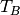
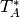
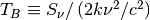

“Antenna Gain” or “sensitivity” equivalency: Defines the conversion between Jy/beam and “brightness temperature”, , in Kelvins. This is a unit very commonly used in radio astronomy. Typically, the gain refers to the conversion between corrected antenna temperature  and flux density. See, e.g., “Tools of Radio Astronomy” (Wilson 2009) eqn 8.16 and eqn 8.19 (these pages are available on google books).

However, the beam area is essential for this computation: the brighntess temperature is inversely proportional to the beam area
| Parameters: | beam_area : Beam Area equivalent
disp : Quantity with spectral units
|
|---|
Examples
Arecibo C-band beam gain ~ 7 K/Jy:
>>> import numpy as np
>>> from astropy import units as u
>>> beam_area = np.pi*(50*u.arcsec)**2
>>> freq = 5*u.GHz
>>> u.Jy.to(u.K, equivalencies=u.brightness_temperature(beam_area,freq))
7.052588858...
>>> (1*u.Jy).to(u.K, equivalencies=u.brightness_temperature(beam_area,freq))
<Quantity 7.05258...
VLA synthetic beam:
>>> beam_area = np.pi*(15*u.arcsec)**2
>>> freq = 5*u.GHz
>>> u.Jy.to(u.K, equivalencies=u.brightness_temperature(beam_area,freq))
78.36209843...